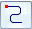
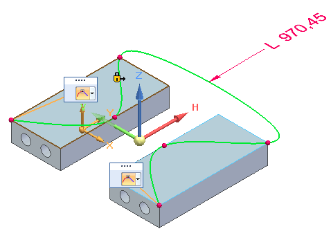
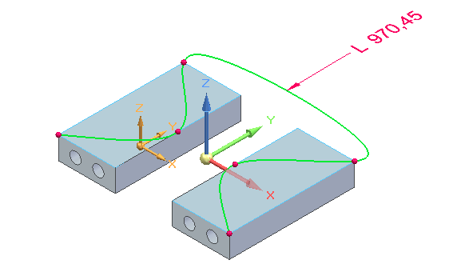
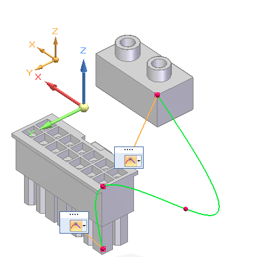
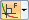
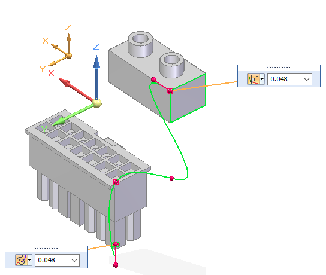
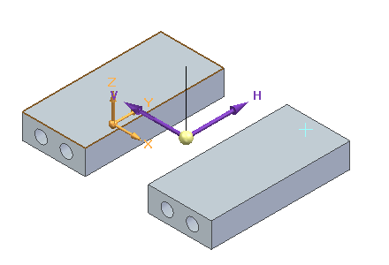

3D Curve command bar
- Styles
-
Specifies the style to use to draw the 3D point. The active style is set to Automatic.
- Line Color
-
Sets the drawing color. You can click the More option to define custom colors in the Colors dialog box.
- Line Width
-
Applies a line width override to the active style.
- Close Curve
-
Specifies that a curve is open or closed. You can use this option when creating a new curve by clicking or dragging. You also can use this option when modifying an existing curve that was created from three or more edit points. You cannot use this option to modify a freehand curve.
Closed option
Result
Off=


On=


- Locate Filter
-
When creating a 3D curve, specifies the type of element that can be located to establish its path.
-
 Cylindrical Faces—Locates cylindrical faces for the path to pass through.
Cylindrical Faces—Locates cylindrical faces for the path to pass through. -
 All Keypoints—Locates any keypoint.
All Keypoints—Locates any keypoint. -
 XYZ Point—Specifies an x,y,z point in free space.
XYZ Point—Specifies an x,y,z point in free space.You can click to define a point, and then enter values in the X, Y, and Z fields.
- X
-
Sets the position for the X-axis coordinate.
- Y
-
Sets the position for the Y-axis coordinate.
- Z
-
Sets the position for the Z-axis coordinate.
-
 None—Turns off keypoint location.
None—Turns off keypoint location.
-
- Flip
-
When you are creating a curve path using the Locate Filter—Cylindrical Faces option, then you can flip the path between ends of the cylinder. After you click the first point of a 3D curve, click the Flip button or press F.
 Note:
Note:This option is not available in edit mode.
- Constrain Direction
-
Specifies the direction in which the control points move when the curve length increases or decreases. Use this option when you want to change the dimensioned length of the curve with reliable results.
Note:This option is only available in edit mode after you place a dimension.
-
Add a dimension to the curve.
-
Click Constrain Direction.
-
Select the triad axis or a linear curve or edge to constrain the change in length in that direction.
-
Now edit the dimension. The curve moves and its shape is modified in the direction the constraint is applied to the curve. For an example, see the 3D Curve command.
-
- Length
-
Displays the dimensioned length for a fixed-length curve.

Tangency Condition-
When the curve type is open, and when a start or end point of the curve are tangent to an element you select, specifies the tangency condition (the end condition) and the length of the tangent vector. You can select the tangency type by selecting it from the list. You can define the length of the tangent vector by dragging the tangent vector handle or typing a value.
- Show/Hide Tangency Control Handles
-
Controls where the tangency handle information is displayed.
When deselected, specifies that the tangency control lists are shown tethered to the curve end points. Use the list to select the tangency control type and to set the length value if applicable.

When selected, the tangency control lists and the applicable length fields are displayed on an expanded command bar.

The tangency conditions are available based on how the curve is defined:
- Natural
-
Specifies that there is no constraining condition enforced at the end point. This is the default option.


Normal to Face-
Specifies that the shape of the curve at the end point is normal to an adjoining face or plane.

- Curvature Continuous
-
Specifies that the shape of the curve at the end point continues the curve from the adjoining edge.
- Start
-
Defines the end condition for the first point of the curve. You can specify whether or not the first point of the curve is tangent to an element you select, and the length of the tangent vector. You can define the length of the tangent vector by dragging the tangent vector handle, or you can type a value.
- End
-
Defines the end condition for the last point of the curve. You can specify whether or not the last point of the curve is tangent to an element you select, and the length of the tangent vector. You can define the length of the tangent vector by dragging the tangent vector handle, or you can type a value.
- Relative to:
-
Specifies the coordinate system to measure coordinates from. The Base coordinate system is the global origin of the document. The global origin is the point where the three default reference planes intersect (the exact center of the design space).
- Lock Sketch Plane
-
Locks the sketch plane for 3D sketch creation. Use this option to constrain the 3D curve path to the selected plane. To turn off the sketch plane, press F3 or click the lock symbol in the graphics window.
Example:The selected sketch plane is shown on the left. The purple axes on the triad indicate the sketch plane that will be used to start the sketch. You can click the triad axes to change the sketch plane as you click curve points.

How do I
Draw a 3D sketchCreate a 3D point using coordinates
Modify a 3D point
Create a 3D curve
Dynamically edit a 3D curve
Route a 3D sketch path between 2 points
Route a 3D curve through circular faces
Mirror 3D sketch elements
Create an equation driven curve
Split a 3D sketch element
Move 3D sketch elements
Learn more
Starting a new synchronous 3D sketchStarting a new ordered 3D sketch
Starting a new assembly 3D sketch
3D sketch relationships
Look up more details
New 3D Sketch command3D Sketch command (assembly)
Show 3D alignment lines
Activate command (3D sketching)
Copy Dimensions to Model command
3D Point command
3D Point command bar
3D Line command
3D Circle by Center command
3D Rectangle by Center command
Tangent 3D Arc command
3D Arc by 3 Points command
3D Curve command
OrientXpres tool
Routing Path command
Route command
Equation Driven Curve command
Equation Driven Curve command bar
Equation Driven Curve dialog box
Mirror command (3D Sketching)
3D Fillet command
3D Trim command
3D Include command
Related Topics
Enable Regions command (3D sketching)Split 3D Sketch command